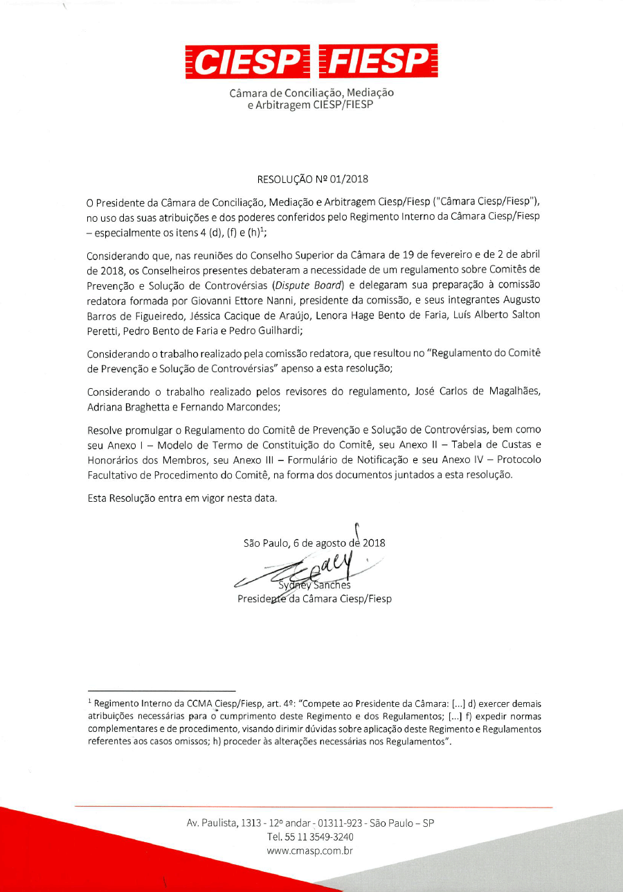

O Comitê de Prevenção e Solução de Controvérsias “Comitê” é um método consensual de gerenciamento, prevenção e resolução de controvérsias no âmbito de um Contrato. No cumprimento de suas atribuições, o Comitê constituído segundo o Regulamento auxiliará as Partes, visando a evitar o surgimento de Controvérsias ou a resolver Controvérsias que venham a surgir.
O desenvolvimento das atividades do Comitê requer uma atuação conjunta e próxima entre o Comitê, as Partes e os técnicos envolvidos nos procedimentos. Para tanto, sua conduta deverá se pautar pelos princípios da boa-fé e cooperação, com vistas a, prioritariamente, evitar o surgimento de Controvérsias. Quando Controvérsias vierem a surgir, o Comitê e as Partes deverão empreender seus melhores esforços para resolvê-las de forma célere e eficiente, priorizando sempre a composição amigável das Partes.
O Comitê constituído segundo o Regulamento possui autonomia para definir suas próprias regras procedimentais e a metodologia de trabalho em tudo aquilo que não conflite com os termos do Regulamento, com o Contrato ou com o Consenso das Partes. Em todos os casos, ao exercer suas atribuições o Comitê deverá observar os princípios da flexibilidade procedimental, simplicidade, oralidade e autonomia das Partes. Sem prejuízo, o Regulamento faculta ao Comitê e às Partes, caso julguem conveniente, adotarem as regras procedimentais padrão sugeridas no Protocolo Facultativo constante do Anexo IV do Regulamento.
O Comitê não é um tribunal arbitral e não exerce função jurisdicional. O Comitê é um órgão contratual, estabelecido segundo a vontade das Partes. Seus pronunciamentos, Recomendações ou Decisões vincularão as Partes somente nos limites do Contrato e do Regulamento, gerando, como toda obrigação, efeitos relativos entre as Partes. As Recomendações ou Decisões do Comitê não são sentenças arbitrais ou judiciais e poderão ser submetidas à apreciação pelo método de resolução de conflitos pactuado pelas Partes, seja arbitragem ou contencioso judicial.
A fim de conferir maior eficácia e agilidade à resolução final de eventuais Controvérsias sobre as Recomendações ou Decisões do Comitê, recomenda-se às Partes que convencionem submeter tais Controvérsias à arbitragem administrada pela Câmara Ciesp/Fiesp.
A Câmara Ciesp/Fiesp atuará em apoio aos Comitês sujeitos ao Regulamento de forma a garantir uma administração eficiente dos trabalhos, prestando apoio secretarial e no gerenciamento das custas relativas aos trabalhos do Comitê e agindo como autoridade nomeadora de Membros, velando pela segurança jurídica e institucional ao gerenciamento dos projetos que adotem este relevante método de prevenção e resolução de disputas.
| Termo | Definição |
|---|---|
|
Câmara Ciesp/Fiesp |
Câmara de Conciliação, Mediação e Arbitragem Ciesp/Fiesp. |
|
Comitê ad hoc |
Comitê temporário, formado a qualquer tempo durante a vigência do Contrato, para o fim de resolver uma ou mais Controvérsia(s) existente(s), de acordo com o Artigo 2.7 do Regulamento, constituindo-se e dissolvendo-se nas hipóteses previstas e aplicáveis do Artigo 7 do Regulamento. |
|
Comitê de Prevenção e Solução de Controvérsias ou “Comitê” |
Comitê constituído por um ou mais Membros nos termos do Regulamento. |
|
Comitê Híbrido ou CH |
Tem o significado atribuído no Artigo 5 do Regulamento. |
|
Comitê Permanente |
Comitê formado de acordo com o Artigo 2.6 do Regulamento para atuar de forma contínua, constituindo-se e dissolvendo‑se nas hipóteses previstas e aplicáveis do Artigo 7 do Regulamento. |
|
Comitê por Adjudicação ou CA |
Tem o significado atribuído no Artigo 4 do Regulamento. |
|
Comitê por Revisão ou CR |
Tem o significado atribuído no Artigo 3 do Regulamento. |
|
Consenso |
Acordo expresso ou ausência de oposição entre as Partes. |
|
Contrato |
O contrato ou os contratos com base no qual ou nos quais o Comitê será formado. |
|
Controvérsia |
Disputa, alegação, solicitação ou qualquer outra questão referente à interpretação e/ou execução do Contrato. |
|
Decisão |
Deliberação do CA ou, conforme aplicável, CH referente a uma Controvérsia. |
|
Diária |
Critério para estimação dos Honorários Extraordinários do Comitê pela realização de Reuniões ou Diligências Extraordinárias, ou pela emissão de Recomendação ou Decisão, nos termos do Artigo 4.4 do Anexo II deste Regulamento. |
|
Discordância |
Notificação escrita em que a Parte reserva direitos e registra sua oposição em face de Recomendação ou de Decisão. |
|
Exposição do Caso |
A apresentação, por escrito, do caso pela Parte que submete uma Controvérsia ao Comitê, a qual é apresentada à outra Parte, a cada membro do Comitê e à Secretaria da Câmara Ciesp/Fiesp. |
|
Formulário de Notificação |
Formulário constante do Anexo III do Regulamento. |
|
Honorários Extraordinários |
Honorários que remuneram o Comitê pela realização de Reuniões ou Diligências Extraordinárias, ou pela emissão de Recomendação ou Decisão, nos termos do Artigo 4 do Anexo II deste Regulamento. |
|
Honorários Mensais |
Honorários que remuneram o Comitê pela participação nas Reuniões e Diligências Ordinárias e pela atuação na tentativa de solução amigável das Controvérsias nos termos do Artigo 3 do Anexo II deste Regulamento. |
|
Membro(s) |
Pessoa(s) nomeada(s) para integrar o Comitê. |
|
Parte(s) |
Parte(s) do Contrato, incluindo-se aquelas que figurarem no Formulário de Notificação ou no Termo de Constituição. |
|
Questionário |
Questionário de Conflito de Interesses, Disponibilidade e Aceitação do Encargo que deve ser preenchido pelos potenciais Membros do Comitê, nos termos do Artigo 2.8.3 do Regulamento. |
|
Recomendações |
Deliberação do CR, ou, conforme aplicável CH, referente a uma Controvérsia. |
|
Regulamento |
Regulamento do Comitê de Prevenção e Solução de Controvérsias da Câmara Ciesp/Fiesp. |
|
Resposta |
Resposta, por escrito, apresentada em face da Exposição do Caso, nos termos do Artigo 13.1 do Regulamento. |
|
Reuniões e Diligências Extraordinárias |
Reuniões e diligências não previstas no calendário de reuniões na forma do Artigo 8.5. |
|
Reuniões e Diligências Ordinárias |
Reuniões e diligências previstas no calendário de reuniões na forma do Artigo 8.3. |
|
Termo de Constituição do Comitê |
Instrumento que marca a constituição do Comitê, nos termos do Artigo 7.1 do Regulamento. |
|
Termo Inicial |
A data na qual a Exposição do Caso for recebida pelo Presidente do Comitê, nos termos do Artigo 12.2 do Regulamento. |
Regulamento do Comitê de Prevenção e Solução de Controvérsias
Em vigor a partir de 6 de agosto de 2018.
Artigo 1 - Disposições Preliminares
1.1. O Comitê, constituído de acordo com o Regulamento, tem por objetivo a prevenção, o gerenciamento e a solução de Controvérsias, qualquer que seja a sua natureza, surgidas no âmbito do Contrato. O Comitê será composto por 1 (um) ou 3 (três) Membros, os quais serão indicados conforme o acordo entre as Partes, salvo na hipótese de nomeação pela Câmara Ciesp/Fiesp, consoante previsão do Regulamento. A função do Comitê é auxiliar as Partes a prevenir e solucionar Controvérsias que possam surgir em relação ao Contrato, devendo as Partes determinar, nos termos do Regulamento, se a atuação do Comitê dar-se-á na modalidade de Comitê por Adjudicação, Comitê por Revisão ou Comitê Híbrido.
1.2. A atuação dos Comitês será administrada pela Câmara Ciesp/Fiesp nos termos do Regulamento. Eventuais Controvérsias referentes a Recomendações ou Decisões dos Comitês deverão ser resolvidas, preferencialmente, mediante arbitragem administrada pela Câmara Ciesp/Fiesp, sem prejuízo de as Partes escolherem outro método de resolução de disputas.
Artigo 2 - Formação do Comitê de Prevenção e Solução de Controvérsias
2.1. O Comitê será formado nos termos do Regulamento e das disposições específicas do Contrato.
2.1.1. As Partes poderão requerer a constituição de Comitê com base em múltiplos contratos relacionados com o mesmo empreendimento mediante a apresentação de Formulário de Notificação conjunto.
2.2. As Partes interessadas em formar um Comitê notificarão por escrito a Câmara Ciesp/Fiesp, mediante o Formulário de Notificação constante do Anexo III do Regulamento, devendo indicar a espécie de Comitê, isto é, se Permanente ou ad hoc, assim como a modalidade de atuação do Comitê, isto é, se CA, CH ou CR, recolhendo a taxa de registro conforme Anexo I do presente Regulamento.
2.3. Havendo previsão no Contrato para formação de Comitê nos termos do Regulamento, qualquer Parte poderá apresentar o Formulário de Notificação.
2.4. O Comitê deverá ser composto por 1 (um) ou 3 (três) Membros, conforme determinação do Contrato ou Consenso.
2.5. Em caso de silêncio do Contrato e ausência de Consenso quanto ao número de Membros, modalidade e espécie de Comitê, a Câmara Ciesp/Fiesp escolherá o número de Membros para compor o Comitê, após ouvidas as Partes, sendo a modalidade de CA e a espécie de Comitê Permanente.
2.6. Salvo se estipulado de maneira diferente no Contrato ou por Consenso, o Formulário de Notificação de que trata o Artigo 2.2 deverá ser apresentado em até 30 (trinta) dias da celebração do Contrato, excetuada a hipótese de Comitê ad hoc, que poderá ser apresentado a qualquer tempo, nos termos do Artigo 2.7 do Regulamento.
2.7. Caso determinado expressamente no Contrato, ou mediante Consenso, o Comitê poderá ser formado como Comitê ad hoc a qualquer tempo, para o fim de resolver uma ou mais Controvérsias especificadas pelas Partes, mediante notificação escrita na forma do Artigo 2.2 do Regulamento.
2.8. O Comitê com 3 (três) Membros será formado da seguinte maneira:
2.8.1. No prazo de até 30 (trinta) dias contados do recebimento do Formulário de Notificação pela Câmara Ciesp/Fiesp, as Partes deverão, em conjunto, indicar dois Membros do Comitê, ou cada qual indicar individualmente um Membro.
2.8.2. No caso de o Contrato ou o Formulário de Notificação apresentar mais de duas Partes, todos os envolvidos se esforçarão para atingir Consenso, no prazo de até 30 (trinta) dias contados do recebimento do Formulário de Notificação, a respeito da indicação de dois Membros. Na ausência de Consenso no prazo especificado, competirá à Câmara Ciesp/Fiesp nomear todos os Membros do Comitê, observado o disposto no Artigo 2.10 do Regulamento.
2.8.3. A Câmara Ciesp/Fiesp informará as indicações realizadas às Partes e aos potenciais Membros do Comitê, solicitando a estes que preencham o Questionário, no prazo de 10 (dez) dias.
2.8.4. Após, a Câmara Ciesp/Fiesp notificará as Partes acerca dos Questionários preenchidos. No caso de indicação individual de um dos Membros do Comitê, cada Parte terá 15 (quinze) dias a contar do recebimento da notificação dos Questionários para manifestar, por escrito e justificadamente, eventual objeção à indicação da outra Parte, impugnando o Membro indicado. Tais impugnações serão resolvidas conforme estabelecido no Artigo 6.6 do Regulamento. Decorrido o prazo para a apresentação de impugnação, pressupor-se-á aceita a indicação.
2.8.5. Em caso de objeção à indicação de Membro do Comitê feita por uma Parte, devidamente acolhida, a outra Parte terá 10 (dez) dias para apresentar nova indicação, contados do recebimento da decisão sobre a objeção.
2.8.6. No prazo de 15 (quinze) dias contados do envio, pela Câmara Ciesp/Fiesp, de notificação da nomeação de dois Membros, estes deverão indicar um terceiro Membro, que presidirá o Comitê. Se os dois Membros não indicarem um terceiro dentro do prazo especificado acima, este será nomeado pela Câmara Ciesp/Fiesp, observado o disposto no Artigo 2.10 do Regulamento.
2.9. Caso as Partes tenham acordado que o Comitê será composto por 1 (um) Membro, as Partes devem acordar quanto à indicação do Membro único, indicando-o no prazo de 30 (trinta) dias contados do recebimento do Formulário de Notificação pela Câmara Ciesp/Fiesp. Caso as Partes não atinjam Consenso quanto à indicação do Membro único nesse prazo, a Câmara Ciesp/Fiesp fará a nomeação, observado o disposto no Artigo 2.10 do Regulamento.
2.10. Caso as Partes ou os Membros não atinjam Consenso, ou por qualquer motivo se abstenham de indicar os Membros ou Membro único do Comitê, nos termos dos Artigos 2.8.1, 2.8.2, 2.8.6 e 2.9, a Câmara Ciesp/Fiesp procederá à escolha do(s) Membro(s).
2.11. Em caso de substituição de qualquer dos Membros do Comitê por motivo de falecimento, renúncia, revogação do seu mandato, ou remoção pelo Presidente da Câmara Ciesp/Fiesp, o novo Membro do Comitê deverá ser nomeado da mesma forma que o Membro substituído. Se, em 15 (quinze) dias contados da informação a respeito do falecimento, renúncia ou revogação do mandato, não houver, por qualquer motivo, nomeação do novo Membro do Comitê, competirá à Câmara Ciesp/Fiesp nomear o novo Membro do Comitê, observado o disposto no Artigo 2.10 do Regulamento.
2.12. Todos os atos praticados pelo Comitê antes da substituição de qualquer de seus Membros permanecerão válidos após a sua substituição, exceto se a nova formação do Comitê entender que existem atos que tenham sido atingidos pelos motivos que ensejaram o afastamento do(s) Membro(s) substituído(s).
2.13. Até a efetiva substituição, os Membros remanescentes do Comitê deverão se abster de realizar audiências e emitir Decisões ou Recomendações sem a expressa concordância das Partes.
2.14. Quando a nomeação de um Membro do Comitê couber à Câmara Ciesp/Fiesp, esta levará em consideração as qualificações do candidato relevantes para o caso, sua disponibilidade, nacionalidade e conhecimentos linguísticos; também poderá levar em conta eventuais observações, comentários ou solicitações das Partes.
Artigo 3 - Comitê por Revisão (CR)
3.1. Os Comitês constituídos na modalidade de CRs emitem Recomendações visando à prevenção e solução de Controvérsias. Os CRs também poderão prestar assistência informal às Partes, nos termos do Artigo 11.
3.2. Com exceção da hipótese prevista no Artigo 3.4 do presente Regulamento, as Recomendações não são vinculantes nem finais em relação às Partes.
3.3. As Partes poderão cumprir a Recomendação a partir do seu recebimento ou, no prazo de 15 (quinze) dias a partir do recebimento da Recomendação ou do recebimento das correções e esclarecimentos previstas no Artigo 18 do Regulamento, o que ocorrer por último, manifestar sua Discordância via notificação à outra Parte, ao CR e à Câmara Ciesp/Fiesp. Essa notificação poderá indicar, a título de informação, os motivos da Discordância da Parte em questão.
3.4. Na ausência de manifestação de Discordância, a Recomendação se tornará final e vinculante e deverá ser cumprida imediatamente pelas Partes.
3.5. Caso seja apresentada Discordância, a Recomendação não se tornará final e vinculante e a Controvérsia deverá ser definitivamente resolvida, preferencialmente, mediante arbitragem administrada pela Câmara Ciesp/Fiesp, sem prejuízo de as Partes escolherem outro método de resolução de disputas.
Artigo 4 - Comitê por Adjudicação (CA)
4.1. Os Comitês constituídos na modalidade de CAs proferem Decisões visando à solução de Controvérsias. Os CAs também poderão prestar assistência informal às Partes, nos termos do Artigo 11.
4.2. A Decisão tem eficácia imediata e vincula as Partes a partir do seu recebimento, independentemente da manifestação de Discordância.
4.3. A Parte que discordar da Decisão deverá, nos 15 (quinze) dias seguintes ao seu recebimento ou do recebimento da deliberação prevista no Artigo 18 do Regulamento, o que ocorrer por último, enviar à outra Parte, ao CA e à Câmara Ciesp/Fiesp, sua Discordância quanto à Decisão. Essa notificação poderá indicar, a título de informação, os motivos da Discordância da Parte em questão.
4.4. Caso nenhuma das Partes apresente Discordância em relação à Decisão conforme previsto no Artigo 4.3, a Decisão, além de vinculante, será final em relação às Partes.
4.5. Caso seja apresentada Discordância, a Controvérsia deverá ser definitivamente resolvida, preferencialmente, mediante arbitragem administrada pela Câmara Ciesp/Fiesp, sem prejuízo de as Partes escolherem outro método de resolução de disputas.
Artigo 5 - Comitê Híbrido (CH)
5.1. Os Comitês constituídos na modalidade de CHs emitem Recomendações visando a prevenir e solucionar Controvérsias nos termos do Artigo 3 do Regulamento e, excepcionalmente, proferem Decisões, nos termos do Artigo 4 do Regulamento. Os CHs também poderão prestar assistência informal às Partes, nos termos do Artigo 11 do Regulamento.
5.1.1. As Recomendações proferidas pelo CH têm a mesma natureza e efeitos das Recomendações a que se refere o Artigo 3 do Regulamento, seguindo o que lá consta quanto ao procedimento aplicável.
5.1.2. As Decisões proferidas pelo CH têm a mesma natureza e efeitos das Decisões a que se refere o Artigo 4 do Regulamento, seguindo o que lá consta quanto ao procedimento aplicável.
5.2. Se uma das Partes solicitar que uma Decisão seja proferida pelo CH a respeito de determinada Controvérsia, e se nenhuma outra Parte se opuser à referida solicitação no prazo de 5 (cinco) dias, o CH proferirá uma Decisão.
5.3. Se uma das Partes solicitar que uma Decisão seja proferida pelo CH e qualquer outra Parte se opuser à solicitação no prazo previsto no Artigo 5.2 do Regulamento, o CH, de forma definitiva e fundamentada decidirá se emitirá uma Recomendação ou proferirá uma Decisão. Para tanto, o CH deverá levar em consideração, entre outros que considere igualmente relevantes, os seguintes fatores:
(a) urgência da situação ou de outras considerações pertinentes, sendo que a Decisão facilitará a execução do Contrato ou evitará uma perda ou prejuízo relevante para qualquer das Partes;
(b) se a Decisão evitará a interrupção da execução do Contrato; e
(c) se a Decisão for necessária para a preservação de provas.
5.4. Qualquer pedido de Recomendação ou Decisão pela Parte que submete uma Controvérsia ao CH deverá ser formulado na Exposição do Caso, prevista no Artigo 12 do Regulamento. Qualquer requerimento similar proveniente de outra Parte deverá ser formulado, por escrito, até a apresentação da Resposta da Parte em questão, conforme disposto no Artigo 13 do Regulamento.
Artigo 6 - Membros do Comitê
6.1. O Comitê será integrado por profissionais nos termos da convenção das Partes. Cabendo a nomeação dos Membros, por qualquer razão, à Câmara Ciesp/Fiesp, será observado o Artigo 2.14 do Regulamento.
6.2. Todos os Membros indicados a integrar o Comitê deverão assinar declaração de independência e de disponibilidade e comunicar imediatamente, por escrito, às Partes, aos demais Membros do Comitê e à Secretaria da Câmara Ciesp/Fiesp, todos os fatos e circunstâncias que possam colocar em dúvida, perante as Partes, sua independência e imparcialidade, inclusive os que possam surgir durante o seu mandato.
6.3. Ao aceitar sua nomeação, todo Membro do Comitê se compromete a exercer suas funções em conformidade com o presente Regulamento.
6.4. Todo Membro do Comitê preservará o equilíbrio de participação e poder decisório entre as Partes, procedendo com imparcialidade, competência, diligência, sigilo e celeridade.
6.5. Salvo convenção em contrário das Partes ou exigência imposta pela lei aplicável, todas as informações obtidas pelo Membro do Comitê no exercício das suas funções deverão ser exclusivamente utilizadas para as atividades do Comitê, e deverão ser tratadas como confidenciais.
6.6. Se uma Parte impugnar um Membro do Comitê, deverá fazê-lo mediante requerimento à Câmara Ciesp/Fiesp, no prazo de 15 (quinze) dias contados do conhecimento dos fatos que motivaram a impugnação. A matéria será decidida por um árbitro integrante do Quadro de Árbitros da Câmara Ciesp/Fiesp, designado pelo Presidente da Câmara Ciesp/Fiesp, no prazo de 30 (trinta) dias a contar de sua aceitação ou do recebimento da última manifestação a respeito do assunto pelo árbitro, o que ocorrer por último. Será respeitado o direito de manifestação do impugnado, dos demais Membros do Comitê e das demais Partes envolvidas.
6.7. Se a impugnação de um Membro do Comitê for acolhida, o Membro deverá ser substituído seguindo-se o mesmo procedimento adotado para nomeação, nos termos do Artigo 2 do Regulamento.
6.8. Salvo convenção em contrário das Partes, o Membro do Comitê não poderá atuar em qualquer procedimento judicial, arbitral ou similar relacionado à Controvérsia submetida ao Comitê, seja na qualidade de árbitro, perito, testemunha técnica ou fática, representante ou conselheiro de uma das Partes.
6.9. Competirá ao Presidente da Câmara Ciesp/Fiesp, a pedido de qualquer das Partes, decidir sobre a remoção de qualquer Membro em caso de não cumprimento de suas atribuições ou quando não desempenhar as suas funções de acordo com o Regulamento ou com o Termo de Constituição do Comitê.
Artigo 7 - Constituição e Extinção do Comitê
7.1. O Comitê será constituído mediante a celebração do Termo de Constituição do Comitê (vide modelo constante do Anexo I), a ser firmado pelas Partes, cada um dos Membros do Comitê e por um representante da Câmara Ciesp/Fiesp.
7.2. A celebração do Termo de Constituição do Comitê marcará o início das atividades do Comitê.
7.3. O Comitê se extinguirá:
(a) a qualquer momento, mediante decisão conjunta das Partes, sem necessidade de justificativa e com efeito imediato; ou
(b) no caso de Comitê ad hoc, uma vez resolvida(s) a(s) Controvérsia(s) em relação à(s) qual(ais) foi constituído.
7.4. As Partes poderão, mediante Consenso, substituir Membros do Comitê, comunicando a todos os Membros por correspondência, nos termos do Artigo 10.1.
Artigo 8 - Procedimento do Comitê
8.1. As disposições do Artigo 8 aplicam-se ao Comitê Permanente, salvo se de outra forma acordado no Termo de Constituição do Comitê. O Comitê ad hoc será conduzido na forma determinada pelos Membros, aplicando-se no que couber as disposições do Artigo 8 do Regulamento.
8.2. Após a constituição do Comitê, as Partes deverão fornecer continuamente as informações necessárias para que este permaneça atualizado sobre as circunstâncias do Contrato e de sua execução.
8.2.1. Os Membros do Comitê se comprometem a manterem-se continuamente atualizados sobre as circunstâncias do Contrato e sobre o andamento de sua execução.
8.3. No início de suas atividades, o Comitê deverá consultar as Partes para estabelecer um calendário de reuniões, diligências e, se necessário, a depender da natureza do Contrato, visitas aos locais de cumprimento da obrigação relevante do Contrato (“Reuniões e Diligências Ordinárias”).
8.4. O Comitê deverá participar de reuniões e visitas aos locais de cumprimento da obrigação relevante do Contrato, devendo as Partes ser comunicadas a respeito previamente.
8.5. Além das Reuniões e Diligências Ordinárias, qualquer das Partes poderá solicitar reuniões ou diligências adicionais ou de urgência (“Reuniões e Diligências Extraordinárias”).
8.5.1. Diante de solicitação para Reuniões e Diligências Extraordinárias, ressalvada estipulação em sentido diverso no Termo de Constituição, o Comitê estimará os Honorários Extraordinários e os custos envolvidos, informando às Partes e à Secretaria da Câmara Ciesp/Fiesp para que efetue o recolhimento dos custos, sem prejuízo de complementação ou de devolução dos valores excedentes às Partes.
8.5.2. Quando houver recolhimento dos Honorários Extraordinários e dos demais custos envolvidos, a Secretaria da Câmara Ciesp/Fiesp informará ao Comitê e às Partes.
8.5.3. Salvo instrução diversa do Comitê, a Reunião ou Diligência Extraordinária só será iniciada após o recolhimento integral dos Honorários Extraordinários previstos no Anexo II deste Regulamento.
8.6. Depois de cada reunião e diligência, o Comitê redigirá ata de reunião ou relatório.
Artigo 9 - Poderes do Comitê
9.1. O procedimento perante o Comitê será regido pelo presente Regulamento e, no silêncio deste, por todas as regras que o Contrato, o Termo de Constituição, as Partes, ou, na sua falta, o Comitê estabelecer, observando os princípios da igualdade de tratamento das Partes e do contraditório. Na ausência de convenção das Partes, o Comitê poderá definir as regras que regerão os trabalhos e tomar todas as medidas necessárias ao exercício de suas funções de Comitê, inclusive, mas não limitado a:
(a) Determinação do idioma dos procedimentos perante o Comitê;
(b) Forma e regularidade da apresentação de documentos ao Comitê;
(c) Convocação de reuniões, visitas e audiências, sua forma e regularidade;
(d) Questões procedimentais suscitadas pelas Partes; e
(e) Todas as medidas necessárias ao exercício das funções do Comitê.
9.1.1. Caso se julgue conveniente, o Comitê, ou as Partes mediante Consenso, poderão adotar as regras procedimentais sugeridas no Protocolo Facultativo constante do Anexo IV do Regulamento.
9.2. As deliberações do Comitê relativas às regras que regem o procedimento deverão ser tomadas por maioria. Se não houver maioria, prevalecerá o voto do Presidente do Comitê.
9.3. No cumprimento de sua obrigação de manter o sigilo das informações apresentadas, o Comitê deverá tomar medidas para proteger segredos comerciais e informações confidenciais.
9.4. Se o Contrato tiver mais de duas Partes, a aplicação do presente Regulamento poderá ser adaptada à situação multilateral, na forma apropriada, por convenção de todas as Partes ou, na sua falta, pelo Comitê.
Artigo 10 - Comunicações, Prazos e Entregas de Documentos
10.1. Salvo se disposto de outra forma no Termo de Constituição, as comunicações poderão ser efetuadas por qualquer meio convencionado entre as Partes nos endereços indicados no Termo de Constituição e, posteriormente, confirmadas por correio com aviso de recebimento, ou pela utilização de outras mídias ou plataformas de comunicação eletrônica hábeis, escolhidas pelas Partes.
10.2. Todas as manifestações das Partes serão apresentadas por escrito. Antes da Constituição do Comitê, todas as manifestações e documentos serão encaminhados à Câmara Ciesp/Fiesp por carta, correio eletrônico ou meio equivalente. Após a Constituição do Comitê, as Partes e os Membros deverão encaminhar todas as manifestações e documentos diretamente às Partes, aos Membros e à Câmara Ciesp/Fiesp.
10.3. Os prazos do Regulamento serão suspensos no período de férias coletivas da Câmara Ciesp/Fiesp. O Comitê, porém, estará à disposição das Partes para a realização de Reuniões e Diligências Extraordinárias ou Recomendações/Decisões de urgência, se assim se fizer necessário. O Presidente do Comitê ficará responsável pela guarda das atas e materiais produzidos no período, e os entregará à Câmara Ciesp/Fiesp ao final do recesso para que a organização interna seja retomada.
Artigo 11 - Assistência Informal para Controvérsias
11.1. A assistência informal pode ser realizada (i) verbalmente entre o Comitê e as Partes; (ii) em reunião entre Comitê e uma das Partes, com o prévio Consentimento das Partes; (iii) mediante opiniões informais dadas pelo Comitê às Partes; ou (iv) por qualquer outra forma de assistência que possa auxiliar as Partes a resolver ou evitar uma Controvérsia.
11.2. A assistência informal, qualquer que seja a sua forma, escrita ou verbal, não vinculará, de qualquer maneira, o Comitê, caso a mesma questão venha a ser submetida para Recomendação ou Decisão, nos termos do presente Regulamento.
Artigo 12 - Submissão Formal de Controvérsias para Recomendação ou Decisão e Exposição do Caso
12.1. A Parte que desejar submeter uma Controvérsia ao Comitê para Recomendação ou Decisão deverá apresentar à(s) outra(s), a cada Membro do Comitê e à Secretaria da Câmara Ciesp/Fiesp a exposição, por escrito, da Controvérsia (“Exposição do Caso”).
12.2. A data na qual a Exposição do Caso for recebida pelo Presidente do Comitê será considerada, para todos os fins, o Termo Inicial do procedimento para a solução da Controvérsia.
12.3. As Partes permanecerão livres para, a qualquer momento, transacionar sobre a Controvérsia, com ou sem a assistência do Comitê, devendo o Comitê e a Secretaria da Câmara Ciesp/Fiesp serem devidamente notificados. Após notificada de eventual transação, o Comitê não emitirá qualquer Recomendação ou Decisão sobre a Controvérsia.
Artigo 13 - Resposta e Documentos Complementares
13.1. Salvo convenção em contrário das Partes ou instruções contrárias do Comitê, a Parte requerida deverá apresentar resposta escrita à Exposição do Caso (“Resposta”), nos 15 (quinze) dias seguintes ao recebimento da Exposição do Caso.
Artigo 14 - Organização e Condução das Audiências
14.1. Poderão ser realizadas audiências para a instrução de Controvérsias, salvo se as Partes e o Comitê tenham convencionado de forma diversa, respeitados os princípios da isonomia entre as Partes, ampla defesa e contraditório.
Artigo 15 - Organização e Prazo para Emissão da Recomendação ou Decisão
15.1. Recebida a Exposição do Caso ou a Resposta, o que ocorrer por último, o Comitê deverá estimar os Honorários Extraordinários e os custos necessários para emitir a Decisão ou Recomendação em atendimento à Exposição do Caso, informando às Partes e à Secretaria da Câmara Ciesp/Fiesp para que recolha os valores necessários.
15.1.1. Salvo instrução diversa do Comitê, as Recomendações ou Decisões só serão pronunciadas após o recolhimento integral dos Honorários Extraordinários previstos no Anexo II deste Regulamento.
15.1.2. A data na qual a Secretaria da Câmara Ciesp/Fiesp informar ao Comitê e às Partes o adiantamento integral dos Honorários Extraordinários e dos custos será considerada, para todos os fins, o termo inicial do prazo do Comitê para emitir a Recomendação ou Decisão.
15.2. O Comitê poderá, a qualquer momento, solicitar a uma Parte que apresente esclarecimentos adicionais, por escrito, ou documentos complementares para auxiliá-lo na preparação de sua Decisão ou Recomendação. Poderá, ainda, designar data para que os esclarecimentos sejam feitos oralmente, devendo convocar todos os interessados. Cada uma dessas solicitações deverá ser comunicada pelo Comitê às Partes, com cópia para a Secretaria da Câmara Ciesp/Fiesp, por escrito.
15.3. O Comitê deverá emitir sua Recomendação ou Decisão o mais brevemente possível e, em todo caso, no prazo máximo de 30 (trinta) dias contados a partir do Termo Inicial definido no Artigo 12.2. Referido prazo poderá ser prorrogado a pedido do Comitê, haja vista a natureza e a complexidade da Controvérsia, bem como outras circunstâncias pertinentes.
Artigo 16 - Conteúdo da Recomendação ou Decisão
16.1. As Recomendações ou Decisões deverão indicar o nome das Partes, a data na qual foram emitidas, as conclusões do Comitê, assim como as razões que as fundamentaram. Na hipótese de CH, deverá constar exposição fundamentada a respeito da natureza da deliberação em questão, isto é, se Decisão ou Recomendação.
16.2. Das Recomendações ou Decisões constará, também, a fixação e o rateio dos custos, despesas e honorários decorrentes da submissão de Controvérsia.
16.2.1. Eventuais reembolsos serão realizados na forma do Artigo 5.8 do Anexo II deste Regulamento.
Artigo 17 - Deliberação da Recomendação ou Decisão
17.1. Caso o Comitê seja composto por 3 (três) Membros, o Comitê deverá envidar esforços para decidir por unanimidade. Se a unanimidade não puder ser alcançada, a Recomendação ou Decisão será emitida por maioria. Caso a maioria não seja obtida, o Comitê comunicará às Partes que não teve êxito em decidir a questão e poderá recomendar a submissão da Controvérsia à forma de resolução de disputas prevista contratualmente.
Artigo 18 - Correção e Esclarecimento sobre a Recomendação ou Decisão
18.1. Por iniciativa própria, ou solicitação das Partes, o Comitê poderá corrigir qualquer erro material, de cálculo ou tipográfico, ou quaisquer erros similares encontrados na Recomendação ou Decisão, desde que tal correção seja submetida às Partes no prazo de 15 (quinze) dias contados a partir da data da emissão da Recomendação ou Decisão.
Artigo 19 - Admissibilidade de Recomendação ou Decisão em Procedimentos Subsequentes
19.1. Salvo convenção em contrário das Partes, uma Recomendação ou Decisão será admissível como prova em qualquer procedimento subsequente, desde que todas as Partes deste procedimento subsequente tenham sido Parte no procedimento do Comitê no qual a Recomendação ou Decisão foi emitida.
Artigo 20 - Custas
20.1. A Câmara Ciesp/Fiesp elaborará Tabela de Custas e Honorários dos Membros dos Comitês e demais despesas, estabelecendo o modo e a forma dos pagamentos (vide Anexo II deste Regulamento).
20.2. A Tabela citada no Artigo 20.1 poderá ser periodicamente revista pela Câmara Ciesp/Fiesp, aplicando-se aos Comitês a partir de sua divulgação.
20.3. Todas as despesas que incidirem e forem incorridas a partir da constituição do Comitê até a sua dissolução deverão ser suportadas igualmente pelas Partes, salvo hipóteses de solicitação unilateral de Reunião ou Diligência Extraordinária, Recomendações ou Decisões, acordo diverso das Partes ou determinação do Comitê.
20.4. A falta de pagamento por uma das Partes da parcela respectiva do adiantamento ou do efetivo pagamento da mensalidade, dos honorários e/ou das despesas, nos 30 (trinta) dias seguintes ao recebimento do documento de cobrança da Câmara Ciesp/Fiesp, autorizará esta última, sem prejuízo de outros direitos, a suspender os serviços do Comitê após transcorridos 15 (quinze) dias do envio de notificação de suspensão às Partes e aos Membros do Comitê. A suspensão vigorará até o pagamento integral de todas as quantias não pagas. A responsabilidade pelo pagamento dos Honorários dos Membros e das despesas do Comitê é exclusiva das Partes. A Câmara Ciesp/Fiesp não responde em caso de falta de recolhimento dos honorários ou do Fundo de Despesas.
20.5 A falta de pagamento dos Honorários Extraordinários e eventuais despesas pela Parte que solicitou unilateralmente a Reunião ou Diligência Extraordinária, Recomendação ou Decisão acarretará a não apreciação da Controvérsia pelos Membros do Comitê, a menos que a outra Parte efetue o recolhimento dos referidos custos.
20.6 Se uma das Partes deixar de pagar à Câmara Ciesp/Fiesp, até a data determinada, sua parcela dos honorários e despesas, a outra Parte poderá, sem que isso implique renúncia a seus direitos, efetuar o pagamento do montante em aberto. A Parte que efetuar o referido pagamento terá o direito, sem prejuízo de outros, de ser reembolsada pela Parte inadimplente de todos os valores pagos a esse título, nos termos da lei.
Artigo 21 - Disposições Gerais
21.1. Em hipótese alguma serão os Membros ou a Câmara Ciesp/Fiesp e/ou seus empregados responsáveis por quaisquer danos relacionados ou oriundos das atividades do Comitê. As Partes assumem a mais ampla e total responsabilidade de indenizar os Membros do Comitê, a Câmara Ciesp/Fiesp e/ou seus empregados por quaisquer danos relacionados ou oriundos das atividades do respectivo Comitê.
21.2. Em todos os casos não previstos expressamente no Regulamento, o Comitê deverá proceder de acordo com os objetivos que norteiam o Regulamento, envidando seus melhores esforços para que as Recomendações ou Decisões sejam emitidas de maneira célere e em conformidade com o Regulamento, o Contrato e a lei aplicável.
21.3. A Câmara Ciesp/Fiesp poderá recusar a administração do Comitê caso o Contrato estipule regras incompatíveis com a condução dos trabalhos e organização administrativa da Câmara Ciesp/Fiesp.
1. Taxa de Registro devida à Câmara Ciesp/Fiesp, a ser paga quando da solicitação de formação do Comitê: R$ 5.000,00 (cinco mil reais). O comprovante de pagamento da Taxa de Registro deve ser juntado ao Formulário de Notificação.
1.1. A Taxa de Registro não é reembolsável.
2. Taxa Mensal de Administração devida por cada Parte à Câmara Ciesp/Fiesp na vigência do Comitê: R$ 1.500,00 (mil e quinhentos reais) mensais, a partir do mês de protocolo do Formulário de Notificação (inclusive) até o mês da dissolução do Comitê (inclusive).
2.1. As Taxas Mensais de Administração devidas na vigência do Comitê não são reembolsáveis, inclusive aquela correspondente ao mês de sua extinção.
2.2. As Taxas Mensais de Administração provisionadas para os meses seguintes à extinção do Comitê serão reembolsadas às Partes na forma do Artigo 5.8 deste Anexo
3. Honorários Mensais dos Membros
3.1. Salvo estipulação diversa no Contrato ou no Termo de Constituição, em remuneração do estudo de rotina da documentação fornecida pelas Partes, participação nas Reuniões e Diligências Ordinárias e atuação na tentativa de solução amigável das Controvérsias, os Membros farão jus a Honorários Mensais calculados de acordo com a tabela a seguir:
| Valor do Contrato | Honorários por Membro | |
| De | Até | |
|---|---|---|
| 0 | R$ 50.000.000,00 | R$ 5.000,00 |
| R$ 50.000.000,01 | R$ 100.000.000,00 | R$ 7.500,00 |
| R$ 100.000.000,01 | R$ 500.000.000,00 | R$ 10.000,00 |
| R$ 500.000.000,01 | R$ 1.000.000.000,00 | R$ 15.000,00 |
| A partir de 1.000.000.000,01 | R$ 20.000,00 | |
3.1.1. Os Honorários Mensais serão devidos desde o mês de constituição do Comitê (inclusive) até o mês de sua extinção (inclusive).
4. Honorários Extraordinários
4.1. Por Decisão ou Recomendação, bem como por Reunião ou Diligência Extraordinária, incluindo todos os estudos de documentação relacionada aos assuntos a serem discutidos em referida reunião/diligência e a elaboração dos documentos de qualquer natureza a serem emitidos em decorrência da reunião/diligência, os membros do Comitê farão jus ao pagamento de uma parcela de Honorários Extraordinários.
4.2. No Termo de Constituição, as Partes e os Membros poderão convencionar o valor dos Honorários Extraordinários, estipulando um valor fixo para cada Decisão, Recomendação, Reunião ou Diligência Extraordinária, ou determinando os critérios para que o Comitê estime os Honorários Extraordinários.
4.3. Salvo estipulação diversa no Termo de Constituição, os Honorários Extraordinários serão estimados pelo Comitê com base no número de Diárias necessárias para levar a termo a prestação solicitada:
| Valor do Contrato | Valor da Diária por Membro | |
| De | Até | |
|---|---|---|
| 0 | R$ 50.000.000,00 | R$ 2.500,00 |
| R$ 50.000.000,01 | R$ 100.000.000,00 | R$ 5.000,00 |
| R$ 100.000.000,01 | R$ 500.000.000,00 | R$ 7.500,00 |
| R$ 500.000.000,01 | R$ 1.000.000.000,00 | R$ 8.000,00 |
| A partir de 1.000.000.000,01 | R$ 12.000,00 | |
4.3.1. Salvo estipulação diversa no Termo de Constituição, caberá ao Comitê estimar o número de Diárias necessário para levar a termo a Reunião ou Diligência Extraordinária, bem como a Recomendação ou Decisão solicitada, limitando-se as duas últimas ao máximo de 5 (cinco) Diárias.
5. Disposições Gerais
5.1. Os valores previstos nos Artigos 3 e 4 do Anexo II são para cada Membro, devendo ser adiantados em conta da Câmara Ciesp/Fiesp para serem repassados às contas dos respectivos beneficiários ou de pessoas jurídicas das quais estes sejam sócios, e cujo objeto social permita a prestação de serviços de consultoria técnica ou jurídica.
5.2. A Câmara Ciesp/Fiesp notificará as Partes para que adiantem os valores correspondentes a 6 (seis) meses da Taxa Mensal de Administração e dos Honorários Mensais previstos nos Artigos 2 e 3.1 do Anexo II seguintes à Constituição do Comitê, além do Fundo de Despesas. Os valores serão mantidos em conta da Câmara Ciesp/Fiesp, que ficará responsável pelo repasse dos Honorários Mensais e pelo abatimento do fundo de despesas de eventuais custas incorridas no curso do Comitê.
5.2.1. Caso se verifique a necessidade de complementação do Fundo de Despesas ou o adiantamento das Taxas Mensais de Administração e Honorários dos Membros durante o funcionamento do Comitê, a Câmara Ciesp/Fiesp notificará as Partes para que procedam a novo adiantamento.
5.4. Antes da constituição do Comitê, a Câmara Ciesp/Fiesp solicitará aos Membros que informem os dados para recebimento de seus honorários ou para o reembolso de despesas, nomeadamente para qual pessoa física ou jurídica e para qual conta bancária serão enviados. As Partes arcarão com as despesas necessárias para efetuar o pagamento aos Membros e a Câmara Ciesp/Fiesp poderá determinar que as Partes antecipem as custas necessárias para recolhimento de eventuais taxas, tributos e contribuições incidentes sobre os pagamentos, especialmente em caso de transferências internacionais.
5.5. Em caso de renúncia, substituição ou remoção de Membro, os Honorários Mensais serão devidos até a data da efetiva saída, calculados pro rata die, salvo a hipótese prevista no Artigo 7.4 do Regulamento, na qual as Partes garantirão a remuneração do(s) Membro(s) pelos três meses seguintes à comunicação formal de sua dispensa.
5.6. No caso de impugnação de Membro, a Parte impugnante deverá, juntamente com o pedido, recolher o valor da Taxa Mensal de Administração e o adiantamento dos honorários devidos ao árbitro escolhido pelo Presidente da Câmara Ciesp/Fiesp para decidir a questão, o qual fará jus às horas efetivamente trabalhadas na apreciação da impugnação, garantido o mínimo de 10 (dez) horas. O valor da hora será de R$ 500,00 (quinhentos reais).
5.7. A Câmara Ciesp/Fiesp poderá conceder prazo suplementar para as Partes efetuarem eventuais pagamentos.
5.8. Caberá à Câmara Ciesp/Fiesp gerenciar o provisionamento de todos os valores recolhidos para a condução dos trabalhos do Comitê, especialmente as Taxas Mensais de Administração, os Honorários dos Membros e o Fundo de Despesas. Quando ocorrer a Extinção do Comitê, a Câmara Ciesp/Fiesp apresentará às Partes demonstrativo das Taxas Mensais de Administração, dos Honorários dos Membros e do Fundo de Despesas, solicitando-lhes que efetuem eventuais pagamentos remanescentes ou organizando a devolução dos valores excedentes.
5.8.1. Caberá à Câmara Ciesp/Fiesp, quando da Extinção do Comitê, efetuar a devolução de eventuais valores excedentes à Parte que os recolheu.
5.8.2. Eventuais pagamentos de valores fixados na Recomendação ou na Decisão serão realizados de Parte à Parte.
Anexo IV – Protocolo Facultativo de Procedimento do Comitê
1. Consultadas as Partes, o Comitê informará, por escrito, a natureza, a forma e a frequência dos relatórios de execução que lhe deverão ser encaminhados. Para o estudo de rotina sobre as características do Contrato e sobre o andamento de sua execução, o Comitê deverá recorrer preferencialmente aos relatórios e aos documentos previstos no Contrato, só requerendo a elaboração de relatórios de execução ou a obtenção de informações em forma e periodicidade distintas daquelas previstas no Contrato caso o Comitê entenda que tais informações não estão suficientemente esclarecidas nos documentos previstos no Contrato.
2. As visitas consistirão de discussões informais com representantes autorizados das Partes e observações diretas do desenvolvimento do Contrato. Durante tais discussões, o Comitê poderá facilitar o diálogo entre os representantes das Partes na tentativa de resolver quaisquer impasses, que poderão vir a ser Controvérsias.
3. A frequência das reuniões e das visitas programadas deverá ser, no mínimo, trimestral e suficiente para manter o Comitê informado da execução do Contrato e de qualquer Controvérsia, salvo convenção em contrário das Partes e do Comitê.
4. As reuniões e visitas somente se realizarão na presença dos representantes das Partes.
5. Caso uma das Partes não compareça a qualquer das reuniões ou visitas programadas, o Comitê decidirá sobre a realização da reunião ou visita sem a presença da Parte em questão.
6. Caso, excepcionalmente, um dos Membros não possa comparecer a qualquer das reuniões ou visitas programadas, caberá aos demais Membros decidir, mediante decisão conjunta, se a reunião deverá ou não se realizar sem a presença do membro. Em caso de impasse, a reunião não será realizada.
7. Os Membros do Comitê deverão acolher eventual solicitação de visita ou reunião urgente o mais breve possível e envidar os melhores esforços para estarem disponíveis para a reunião ou visita em, no máximo, 15 (quinze) dias seguintes à solicitação.
8. Todas as manifestações e documentos, antes de constituído o Comitê, deverão seguir aos cuidados da Câmara Ciesp/Fiesp por carta, correio eletrônico ou meio equivalente. Caso a Parte opte pelo envio de vias impressas, deverá remeter à Câmara Ciesp/Fiesp o número de cópias suficientes para que cada Parte, os Membros e a Secretaria da Câmara Ciesp/Fiesp recebam, cada um, uma cópia, além da via de protocolo.
9. As Partes poderão optar por contratar sistema de organização e compartilhamento de documentos exclusivamente eletrônico, que permita o acesso e controle de toda documentação pelas Partes, Membros e a Secretaria da Câmara Ciesp/Fiesp, em cujo caso poderá ser dispensado o envio de documentação impressa. A informação contida no sistema de compartilhamento eletrônico de informações deverá ser mantida à disposição das Partes, dos Membros do Comitê e Secretaria da Câmara Ciesp/Fiesp por um período mínimo de 5 (cinco) anos subsequentes ao encerramento das atividades do Comitê.
10. Os prazos serão computados por dias corridos, excluindo-se o dia do começo e incluindo-se o do vencimento. O começo e o vencimento do prazo serão protraídos para o primeiro dia útil seguinte se coincidirem com dias em que não haja expediente na Câmara Ciesp/Fiesp.
11. Ao submeter formalmente uma Controvérsia ao Comitê, a Parte apresentará a Exposição do Caso, a qual deverá conter as seguintes informações:
12. Já a Resposta deverá incluir:
13. Havendo necessidade de realização de audiência, esta poderá ser presencial, ou por teleconferência/videoconferência, caso as Partes e o Comitê assim o desejem. Deverão participar todos os Membros do Comitê, a menos que o Comitê decida, em vista de circunstâncias específicas e após consulta às Partes, pela conveniência de realizar a audiência mesmo na ausência de um dos Membros do Comitê.
13.1 O Comitê terá plenos poderes para conduzir as audiências da forma que entender adequada, devendo determinar a maneira como se processará.
13.2 O Comitê deverá conduzir o procedimento de maneira equânime e imparcial, bem como deverá assegurar a cada Parte a oportunidade de apresentar seus argumentos e provas cabíveis e pertinentes.
13.3 As Partes comparecerão pessoalmente ou por meio de representantes devidamente autorizados que tenham responsabilidade e conhecimento a respeito da execução do Contrato. Elas também poderão ser assistidas por conselheiros.
14. Se uma Parte se recusar a participar do procedimento do Comitê ou de qualquer de suas etapas sem justificativas, o Comitê prosseguirá apesar da recusa ou ausência.
15. As Recomendações ou Decisões emitidas pelo Comitê poderão incluir as seguintes informações, sem, contudo, se limitar a elas, nem necessariamente respeitar essa ordem:
16. As Partes poderão, em 15 (quinze) dias contados do recebimento da Recomendação ou Decisão, requerer ao Comitê a correção de qualquer erro mencionado no Artigo 18.1 ou solicitar esclarecimentos sobre a Recomendação ou Decisão. Após o recebimento do requerimento pelo Presidente do Comitê, o Comitê concederá à outra Parte 10 (dez) dias para apresentar seus comentários. A deliberação a respeito da correção ou esclarecimento do Comitê deverá ser realizado em até 30 (trinta) dias contados a partir da data em que expira o prazo para recebimento dos comentários da outra Parte.
A referência e sujeição de disputas ao Regulamento do Comitê de Prevenção e Solução de Controvérsias pode se dar de diversas formas. Ela pode ocorrer no momento da celebração do contrato (mediante cláusula contratual) ou após o surgimento da controvérsia (por meio de instrumento específico ou pelo envio do Formulário de Notificação anexo ao Regulamento). As partes podem escolher a forma mais adequada às circunstâncias, especialmente se preferem formar um Comitê Permanente ou um Comitê ad hoc, na forma do regulamento. A opção a seguir prevê a referência ao Regulamento por meio de cláusula contratual, a qual também pode ser adaptada às particularidades do negócio ou projeto em que será aplicada.
Cláusula X - Comitê de Prevenção e Solução de Controvérsias e Arbitragem
As Partes poderão, de comum acordo, a qualquer tempo durante a execução do presente contrato, estabelecer um comitê de solução de disputas na modalidade de [Comitê por Adjudicação / Comitê por Revisão / Comitê Híbrido] (“Comitê”), nos termos do Regulamento do Comitê de Prevenção e Solução de Controvérsias da Câmara de Conciliação, Mediação e Arbitragem Ciesp/Fiesp (respectivamente, “Regulamento CPSC” e “Câmara Ciesp/Fiesp”), cujas regras são incorporadas por referência ao presente instrumento, a fim de solucionar a qualquer tempo quaisquer divergências, dúvidas ou conflitos relacionados [ao presente contrato / cláusula que define o escopo das matérias sujeitas ao Comitê] (“Controvérsia”) surgidas durante a execução do Contrato. O Comitê será composto por [um / três] membro[s], a serem nomeados na forma estabelecida no Regulamento CPSC. As Partes desde já concordam que o Comitê não servirá como Tribunal Arbitral ou órgão jurisdicional e não possuirá os poderes destes. As Partes concordam em cooperar na condução expedita do procedimento, e em envidar seus melhores esforços para fornecer ao Comitê acesso à todas as informações necessárias para que seja resolvida a Controvérsia.
Independentemente de qualquer Parte optar por submeter Controvérsia ao CPSC ou não, qualquer controvérsia decorrente da interpretação, cumprimento ou execução do presente Contrato, ou com ele relacionada, será a qualquer tempo definitivamente resolvida por arbitragem, sob administração da CCMA Ciesp/Fiesp de Conciliação, Mediação e Arbitragem CIESP/FIESP e de acordo com seu Regulamento de Arbitragem, de modo que a submissão da Controvérsia ao CPSC não constitui condição prévia para a instauração de procedimento arbitral. O procedimento arbitral será conduzido por [um/três] árbitro[s], indicados segundo o referido Regulamento de Arbitragem. A sede da arbitragem será a cidade de [Município/Estado/País], onde a sentença arbitral será proferida. O idioma será o [idioma].
Os trechos realçados devem ser revistos pelas partes.
